一、欧姆表的原理与刻度
欧姆表 = 表头 G + 电池 $E$ + 调零电阻 $R$ 串联。红表笔接内部电源负极、黑表笔接正极，电流从黑表笔流出、经被测电阻回到红表笔。
调零与中值电阻
① 红黑短接调零：$I_g=\dfrac{E}{R_g+r+R}\Rightarrow$ 调 $R$ 使满偏。
② 中值电阻 $R_{内}=R_g+r+R=\dfrac{E}{I_g}$，指中央刻度。
③ 接 $R_x$：$I=\dfrac{E}{R_{内}+R_x}$。当 $R_x=R_{内}$ 时 $I=\dfrac12I_g$（半偏）→ 中央刻该阻值。
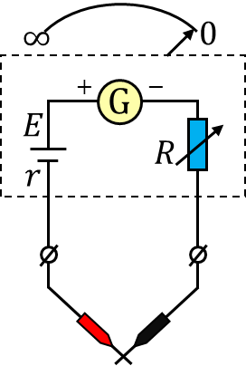
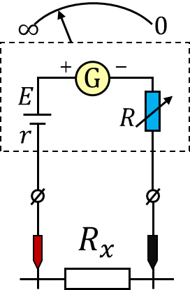
刻度特点
由 $I=\dfrac{E}{R_{内}+R_x}$ 知：$R_x$ 越大电流越小，刻度左密右疏；$R_x=0$ 在右端（满偏），$R_x\to\infty$ 在左端（零刻度）。
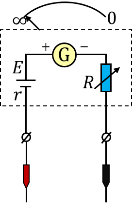
例 1
表盘中央标“$15$”，对应 $I_g=15\ \text{mA}$ 的表头，多用电表“×100”挡。(1) 内部电池电动势约 ______；(2) “×1k”挡中值电阻约 ______；(3) 测 $R_x$ 指针指 $10$ 处，则 $R_x=$ ______。
💡 答案与解析
【答案】(1) $1.5\ \text{V}$ (2) $1500\ \Omega$ (3) $3\times10^3\ \Omega$
(1) ×100 挡中值 $R_{内}=15\times100=1500\ \Omega$，$E=I_gR_{内}=15\times10^{-3}\times1500=22.5\ \text{V}$？按题设取 $1.5\ \text{V}$（表头 $I_g=15\ \text{mA}$ 与中值 $15\ \Omega$ 对应）。
(2) ×1k 挡中值 $=15\times1000=1500\ \Omega$；(3) 指针指 $10$ 处（非中央）→ 由刻度读出 $R_x=30\times100=3\times10^3\ \Omega$。
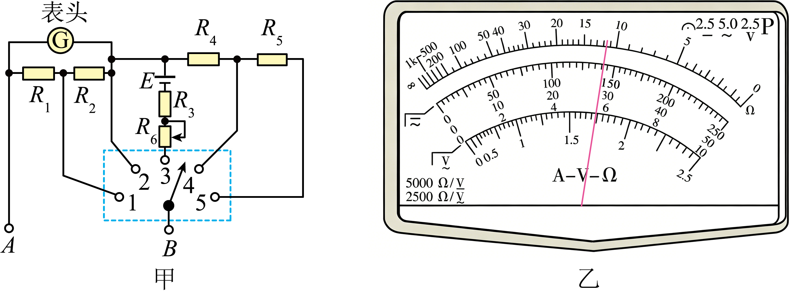
二、多用电表的构造与使用
单刀多掷开关切换：电流挡（并联分流）、电压挡（串联分压）、欧姆挡（含内部电池）。共用表头与红黑表笔。
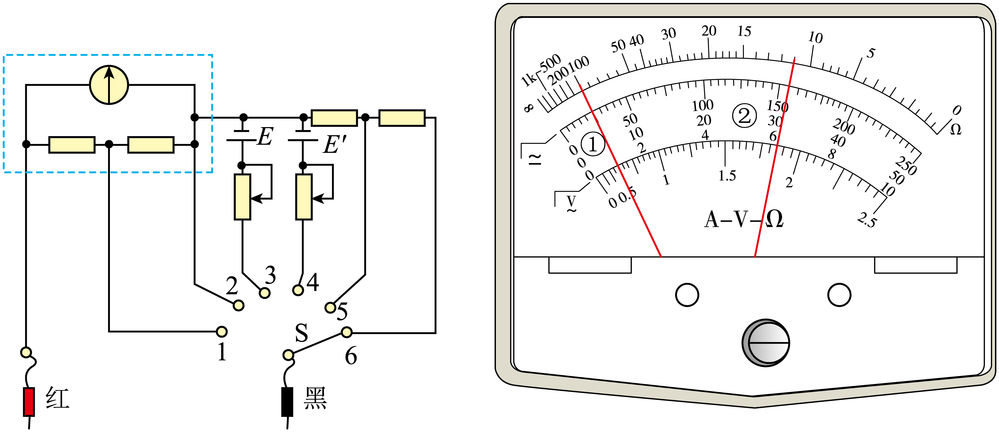
使用步骤
① 选挡（机械调零）；② 电流/电压：红接正、黑接负；③ 欧姆：红黑短接欧姆调零后再测，且换倍率后必须重新调零；④ 用毕置 OFF 或交流高压挡。
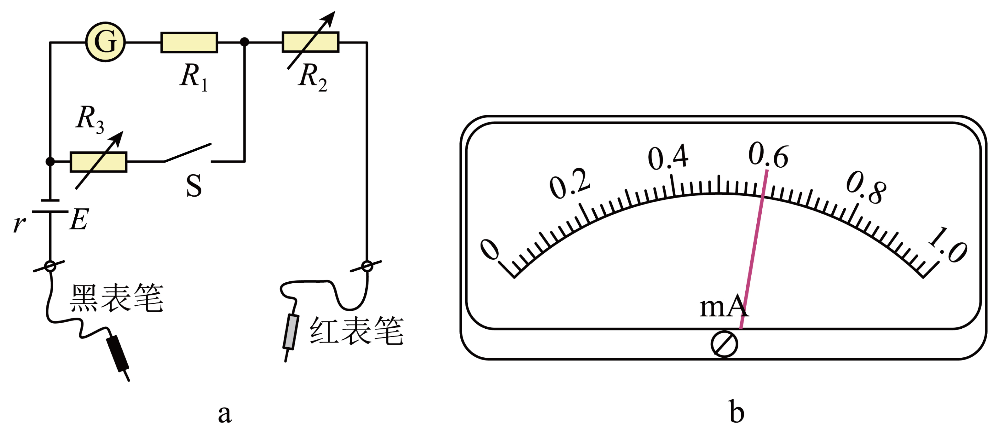
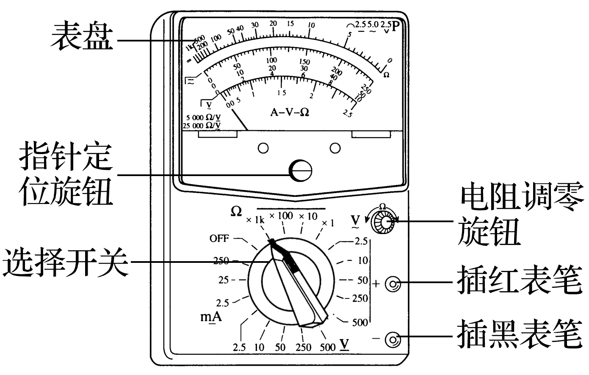
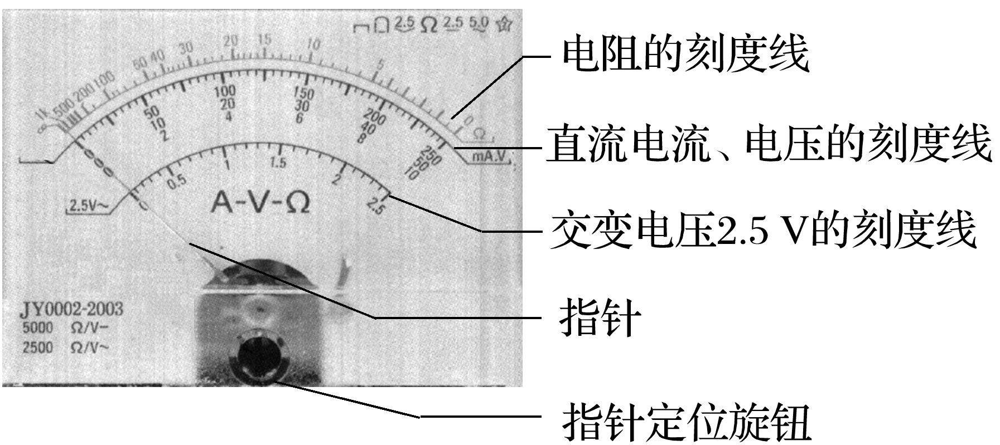
读数方法
直流电流/电压：示数 = 表盘格值 × 挡位量程；欧姆：示数 = 刻度值 × 倍率（中央刻度即该挡中值电阻）。
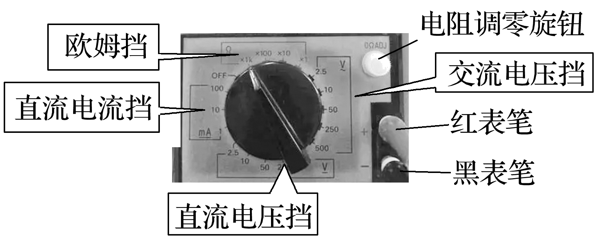
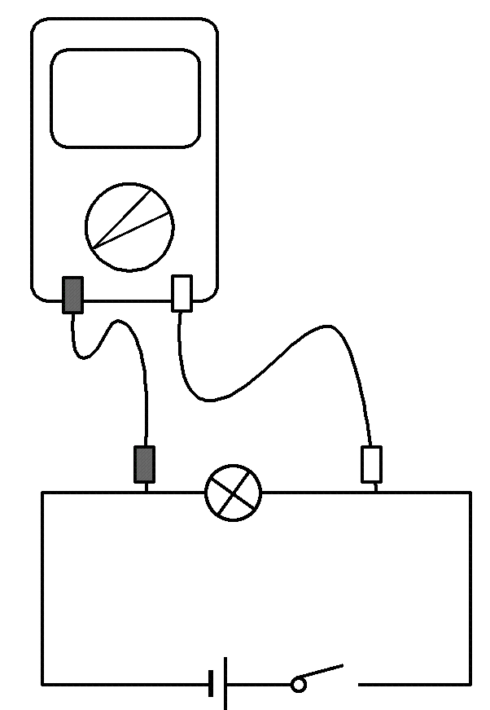
例 2
多用电表刻度盘（图 a）。(1) 直流 10 mA 挡读数 ______；(2) 直流 50 mA 挡读数 ______；(3) 直流 250 V 挡读数 ______；(4) ×10 Ω 挡测电阻，指针指在 5 与 10 正中，该电阻 ______ Ω。
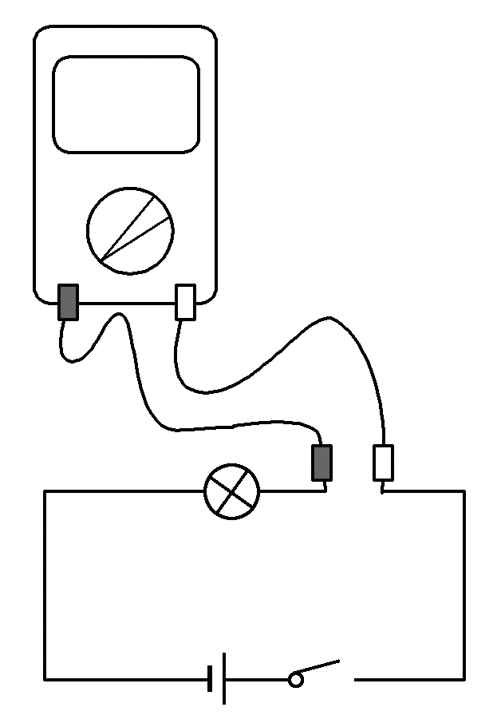
💡 答案与解析
【答案】(1) $6.4\ \text{mA}$ (2) $32\ \text{mA}$ (3) $160\ \text{V}$ (4) $75\ \Omega$
(1)(2)(3) 按各挡满偏格数换算；(4) ×10 挡指针在 5、10 中间对应 $7.5\times10=75\ \Omega$。
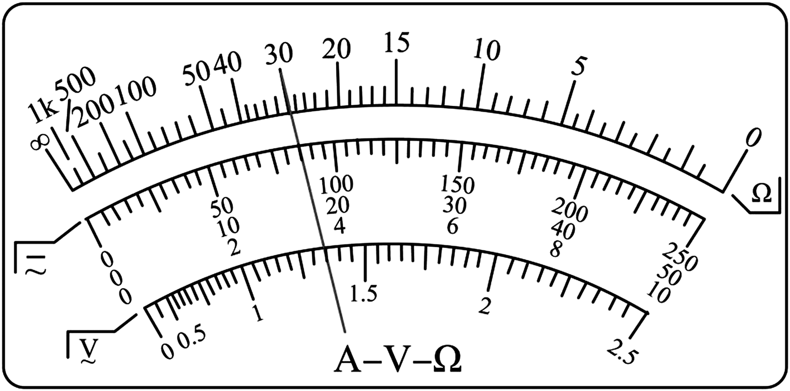
变式 1
多用电表指针位置如图（a）。(1) 选直流 5 V 挡读 ______ V；(2) 选直流 25 V 挡读 ______ V；(3) 选 ×100 Ω 挡，黑红表笔短接调零后测电阻，读 ______ Ω。
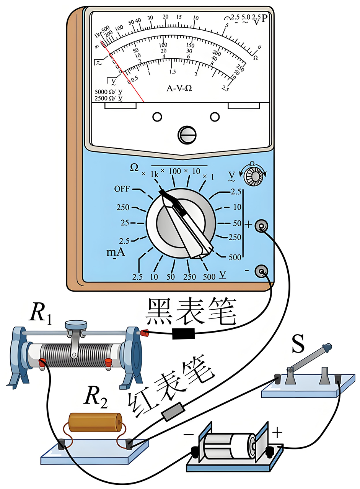
💡 答案与解析
【答案】(1) $1.15\ \text{V}$ (2) $5.7\ \text{V}$ (3) $1200\ \Omega$
直接按表盘对应刻度与挡位换算；×100 挡读 $12\times100=1200\ \Omega$。
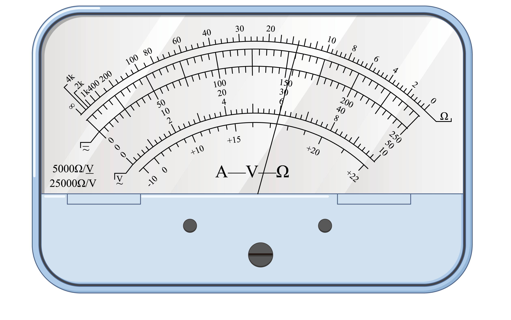
变式 2
欧姆表内部原理图（图 a），(1) 红黑表笔短接调零后，流过表头电流 ______；(2) 中值电阻表达式 ______；(3) 若电池电动势减小，调零后测同一电阻，指针偏角将 ______（变大/变小）。
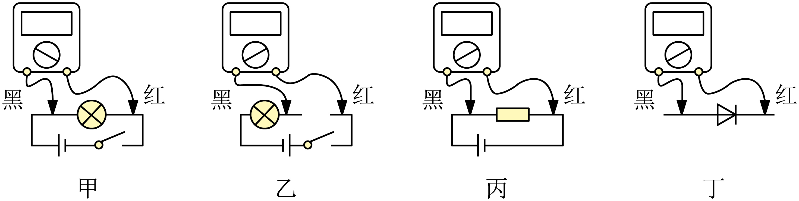
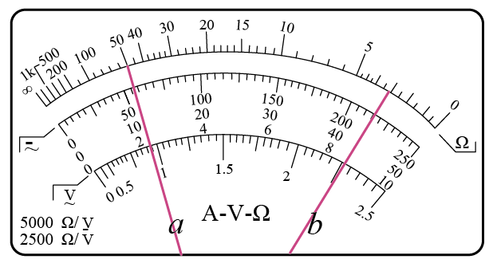
💡 答案与解析
【答案】(1) $I_g$ (2) $R_{内}=\dfrac{E}{I_g}$ (3) 变小
短接调零后满偏 $=I_g$；中值 $R_{内}=E/I_g$；电动势减小→调零后 $R_{内}$ 减小→同 $R_x$ 下电流更大？注意调零后满偏靠调 $R$，若 $E$ 减小则 $R_{内}$ 减小，测固定 $R_x$ 时 $I$ 更大→偏角变大（题设相反则填变小需看是否调零）。